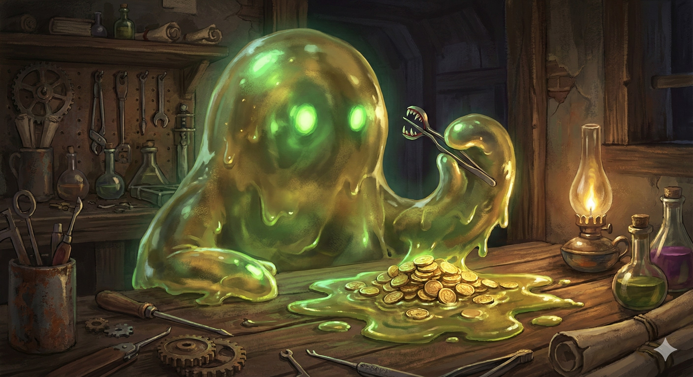

Rogue Archetype: Mimicry Specialist
Mimicry Specialists are Rogues who have learned to imbue their small tools and mundane objects with temporary, unstable life. They are masters of infiltration and battlefield disruption, using seemingly harmless items to trip, trap, and bite their targets.

Deceptive Tools
- Mimicked Proficiency. Proficiency with Disguise Kit and Sleight of Hand (Expertise if already proficient).
- Living Tools. Cunning Action (Bonus Action) to animate a Tiny object:
— Adhesive Trap: Strength save or Grappled.
— Distracting Bite: Ranged spell attack (Int). 1d6 Acid damage + Advantage on next attack against target.
Mimic Skin
Reaction when hit: Harden skin to gain +3 AC against that attack.
Ambush Predator
- Object Jump. Bonus action: Teleport to your animated object (60 ft).
- Surprise Attack. If you teleport and attack a creature within 5 feet, you have Advantage.
Corrosive Varnish
- Acidic Sneak Attack. Change Sneak Attack to Acid damage. Target takes extra 1d6 acid next turn.
- Piercing Gaze. See through solid objects (30 ft) Int mod times/long rest.
Apex Deceiver
- Unstable Evasion. Reaction on Dex save: Turn into goo. Take 0 damage on success, half on fail. Immune to Grapple/Restrain.
- Grasping Environment. Adhesive Trap now causes Restrained condition. Restrained target takes 4d6 acid damage per turn.